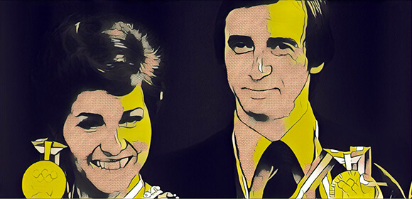

>
«Настоящие герои» – спецпроект на «Чемпионате»
Уйти от приговора. Как сменить имя и победить смерть
Просто спартанец. История одного героя

Не хочу лечиться… Как жила и умерла великая Людмила Пахомова
Танец смерти. Как пробежать 100 метров за минуту и стать героем
Heart will go on. Невероятная история игрока с донорским сердцем
Чернокожий атлет, унизивший Гитлера
Почему Клаудио Раньери — лучший тренер мира
Почему наколка борца заставила заплакать судью
«Эй, вы видели эту красоту?»
Каким мы запомним Луку Тони
Грани таланта Светланы Хоркиной
Почему Смолов в топ-чемпионате
Потому что жизнь – борьба. История одной маленькой девочки
Хромой чемпион. Как выиграть Олимпиаду после ранения на войне
Чудо с косичками. История гимнастки, которую звали crazy
«Мистер Арсенал». Тот, кого не хватает Арсену Венгеру сейчас
История большой любви, или Сказка про белых лебедей
Рыцарь дня. Всё, что нужно знать о Джейми Варди
«После жизни в аду я ещё тут». Невероятная история Мирьяны Лучич
Только пятки сверкали. Как босиком выиграть олимпийский марафон
Бред имени Брэдбери. странный способ выиграть Олимпиаду
«Он — самый мужиковатый мужик!» Безумная история Йонаса Хектора
Жить вопреки. История одной победы над смертью
Дай пять! Как преодолеть 226 км супертриатлона без обеих рук
Мисс Кувалда. История успеха абсолютной чемпионки мира по боксу